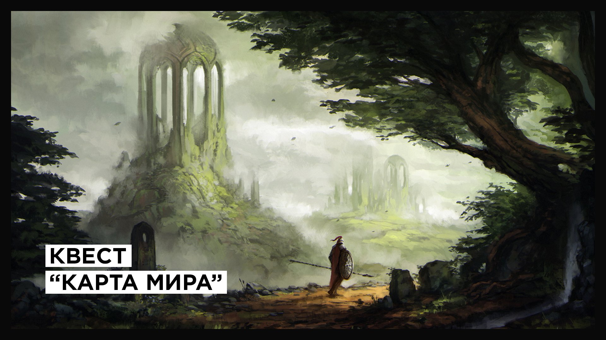
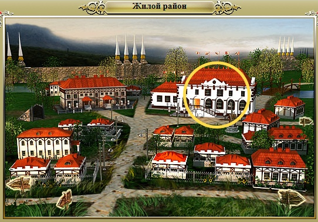

Все течет, все изменяется, не остается неизменной и карта мира, уходят под землю, погружаются в болота, разрушаются до основания храмы, крепости, пещеры и шахты, но взамен им возникают новые в самых разных уголках нашего мира. Вам нужно обойти все известные объекты, расположенные на глобальной карте в нашей части мира, и вернуться с отчетом о текущем положении дел в Академию.
— Синопсис квеста из Академии

Данный квест можно взять в Академии — он доступен с первого уровня, однако реально выполнить его можно на 30+, так как некоторые объекты находятся, например, в Нордском Лесу, местные обитатели которого — Грифоны [55+] — только и ждут, чтобы разорвать зазевавшегося путешественника!
Но если Вы заручитесь помощью сильного наёмника — квест будет пройден на раз-два даже на первом уровне 😉
-
- Большой оазис (-28, -40)
- Город Большие Комары (0, 1)
- Деревня Зеркальная гавань (94, -21)
- Деревня Знахарей (29, -2)
- Деревня Малые Комары (-14, 14)
- Деревня Междуречка (6, -11)
- Деревня Окололеска (123, 62)
- Забытые могильники (8, 48)
- Забытые могильники (11, 50)
- Забытые могильники (14, 50)
- Замок Звезда пустыни (13, -34)
- Замок Каменный трон (49, 1)
- Замок Лесная корона (-27, 18)
- Кимберлитовая шахта (-48, -44)
- Корундовая шахта (2, -37)
- Кузница Древнего пламени (71, 21)
- Кузница Солнца (-68, -45)
- Лесной лабиринт (-45, 15)
- Логово бандитов (-68, 18)
- Лодочная пристань (27, -1)
- Малый оазис (-13, -30)
- Мшистые пещеры (100, 37)
- Обелиск хаоса (30-40) (1, -4)
- Обелиск хаоса (30-40) (21, -13)
- Обелиск хаоса (30-99) (-27, -4)
- Обелиск хаоса (30-99) (27, 4)
- Обелиск хаоса (30-99) (48, -44)
- Обелиск хаоса (30-99) (-68, 42)
- Обелиск хаоса (30-99) (-8, 5)
- Обелиск хаоса (30-99) (25, 26)
- Обелиск хаоса (30-99) (-27, -14)
- Обелиск хаоса (30-99) (-4, 13)
- Обелиск хаоса (40-50) (23, 11)
- Обелиск хаоса (40-50) (7, -16)
- Обелиск хаоса (50-60) (8, 29)
- Обелиск хаоса (50-60) (-30, 11)
- Особняк вампиров (24, 69)
- Паучье подземелье (27, -31)
- Подземелье гномов (159, 54)
- Подземелье Старого замка (173, -34)
- Предгорная шахта (50, 10)
- Снежная башня (-24, 71)
- Стоянка кочевников (84, -42)
- Форпост Дейжи (-9, -5)
- Форпост Селесты (6, 4)
- Храм Солнца (-71, -44)
- Черная башня (29, 18)
- Шахта кобольдов (110, -24)
Примечание №1: Некоторые объекты имеют не одну точку входа, если после посещения какого-либо из них – он не засчитался в квест, то попробуйте посетить его же, но с другой координаты входа.
Примечание №2: Если Вы выполнили квест «Опасные люди» до того, как взяли квест «Карта мира» — Логово бандитов вы посетить не сможете. В таком случае — вы можете посетить любой другой, ранее не посещенный объект, — на карте их все равно больше, чем 42.
| В статье использована информация с Информера игры |